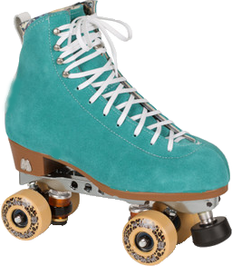

<!DOCTYPE html>
<html lang="en"></html>
<head>
  <meta charset="UTF-8">
  <meta http-equiv="X-UA-Compatible" content="IE=edge">
  <meta name="viewport" content="width=device-width, initial-scale=1.0">
  <link rel="preconnect" href="https://fonts.googleapis.com">
  <link rel="preconnect" href="https://fonts.gstatic.com" crossorigin>
  <link href="https://fonts.googleapis.com/css2?family=DM+Mono&amp;family=DM+Sans&amp;display=swap" rel="stylesheet">
  <link rel="stylesheet" href="css/main.css">
  <title>The Adders</title>
</head>
<div id="circle-container">
  <div id="circle">
    <button id="close">X</button>
    <button id="open"></button>
  </div>
</div>
<nav id="nav">
  <ul>
    <li><a href="index.html">TAKE ME HOME</a></li>
    <li><a href="snitw.html">something nasty</a></li>
    <li><a href="bedouin.html">bedouin</a></li>
    <li><a href="jackroller.html">jackroller</a></li>
    <li><a href="lost.html">lostombres</a></li>
    <li><a href="petrol.html">petrol moon    </a></li>
    <li><a href="starkadders.html">starkadders</a></li>
    <li><a href="idle.html">idle lovers</a></li>
    <li><a href="adders.html">the adders</a></li>
  </ul>
</nav>
<div id="main">
  <div class="content">
    <h1>
      <div class="smallL">~~</div>
      <div class="normal">jackroller</div>
      <div class="smallR">~~ </div>
    </h1>
    <div class="photos"></div>
    <div class="blurb">
      <p>Then with other guys (initially guitarist and songwriter Dave Cox), some songs never made it beyond home-based reel-to-reel and cassette tape. The legendary Mike 'Dobs' Dobrijevic recorded some songs under the name of Jackroller (a name we chose that had been for scumbags who robbed homeless hobos in the American North). Mike was a multi-instrumentalist (guitar, bass and drummer) in this band after an extensive history of his own for decades. (Mike was later to rejoin us as The IdleLovers/Adders in the 20teens).</p>
      <p>This band incarnation did not last long before the end of the second millennium with just a few gigs including Exeter's Cavern club again!</p>
      <p>After a breather and outside-music gap, the dust slowly started to settle, with new ties and graced with progeny and stability! Having bought a semi-converted LDV minbus to play in (separate to the mobile home he and Ali then shared on the edge of Exeter), in 2001 there were a few songs that Rog felt the urge to try out louder with other muso's! But who with and where! </p>
    </div>
  </div>
  <div class="toonz">
    <h2>toonz
      <div class="song s1">
        <audio src="mp3s/jackroller/happy house.mp3"></audio>
        <button> </button><span>Happy House</span>
      </div>
    </h2>
  </div>
  <div id="modal">
    <div id="caption"></div>
  </div>
  <script src="js/scripts.prod.js"></script>
</div>